pytorch
pytorch教程
阅读该教程，您需要python基础的预备知识
conda管理环境
打开anaconda prompt
创建环境
1 | |
1 | |
打开名为pytorch的环境
1 | |
使用pip list查看当前安装的所有包
1 | |
输入jupyter notebook打开jupyter
shift+enter自动执行当前语句
Dataset类代码实践
读取文件夹中的文件列表：
1 | |
1 | |
导入图片
1 | |
实现类
1 | |
1 | |
tensorboard的使用
基础使用
1 | |
在控制台输入tensorboard --logdir=20231011/logs --port=6007查看绘图结果
导入图片
1 | |
1 | |
在console中输入tensorboard --logdir=20231011/ants1 --port=6007，打开网站，滑动滑块，可以看见两张不同的图像
transforms的使用
基础使用
1 | |
1 | |
tensor数据类型包装了 神经网络所需理论基础的一些参数
1 | |
在console输入tensorboard --logdir=20231011/test02,可以在网页上看到图片
常见transforms(1:normalize)
归一化操作
1 | |
使用Compose组合多个操作
1 | |
可以观察到图片被压缩了
使用公开的数据集
这里使用手写数字作为示范
1 | |
1 | |
DataLoader的使用
在DataLoader中num_works表示同时进行的任务数，默认为0（只使用主进程），据说在windows下如果设置为大于0的值会报错
1 | |
神经网络基本骨架- nn.module的使用
torch.nn是torch.nn.functional的封装，前者包含后者，前者更容易使用
类torch.nn.Module是所有神经网络的骨架，所有搭建的神经网络都应当基础这个类
定义神经网络的基本模板
1 | |
graph LR;
id1(input) ---> id2{forward}
id2 ---> id3(output)
可以使用pycharm的code generate功能(在菜单栏code/generate…)，选择Override Methods自动补全代码
示例代码
1 | |
输出
1 | |
卷积操作
这里主要学习nn.Conv2d
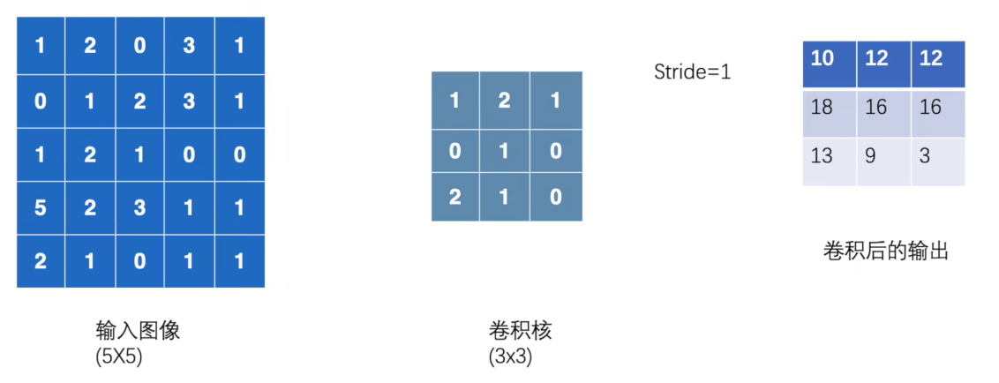
Stride的意义是卷积核单次移动的距离
1 | |
1 | |
设置padding
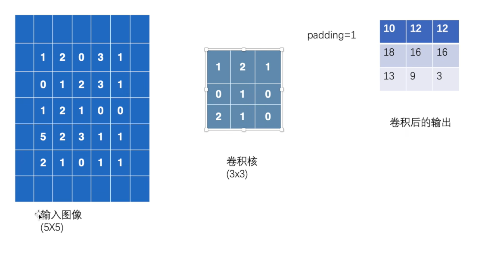
padding默认为0，当把padding设置为1时，输入图像周围增加一圈，数值填0
1 | |
1 | |
神经网络-卷积层
1 | |
输入tensorboard --logdir=logs/nn_conv2d_logs查看结果
神经网络-最大池化
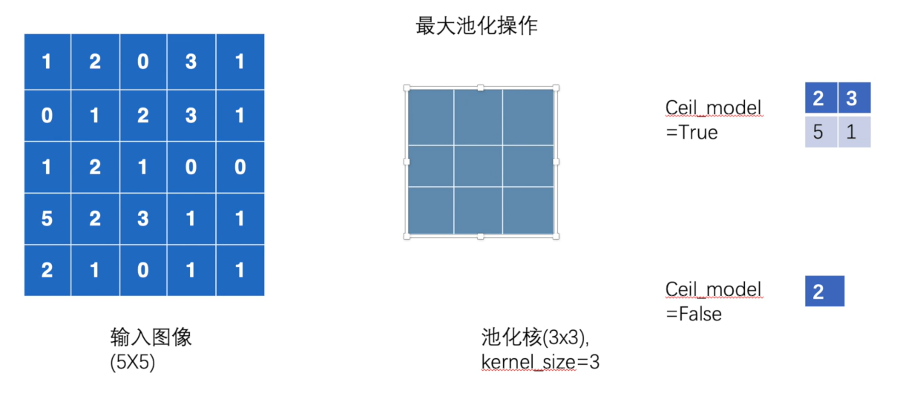
1 | |
1 | |
最大池化的一个作用是有损压缩文件，比如将1080P的视频转为720P的
在神经网络的训练中很常用，可以减少计算量
1 | |
输入tensorboard --logdir=logs/nn_maxpool查看效果
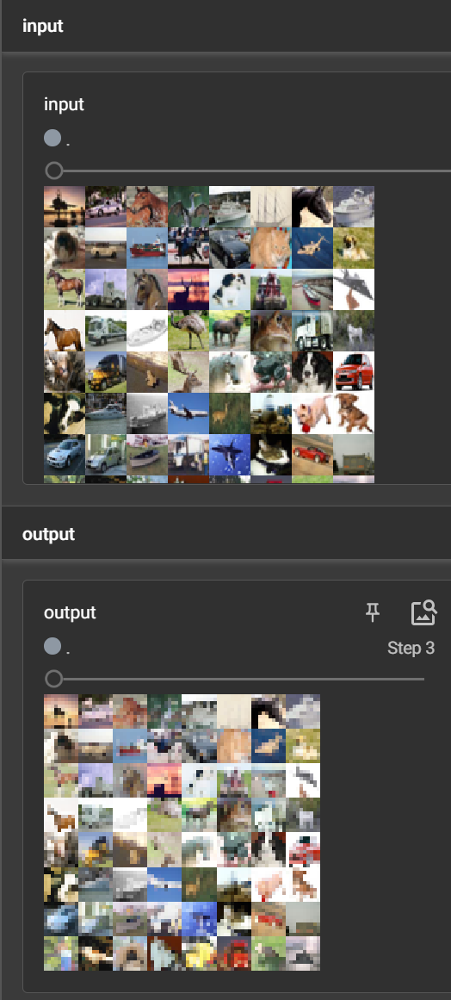
可以看出，图片被模糊了
神经网络-非线性激活
这里举例ReLU和sigmoid两个函数，实现功能是将图像每个元素的值映射为新的函数值
ReLU:
1 | |
1 | |
可以看出，ReLU执行的是的操作
Sigmoid:
1 | |
输入tensorboard --logdir=logs/nn_relu查看结果
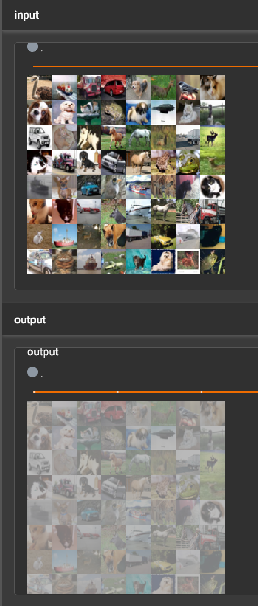
神经网络-线性层及其他层介绍
1 | |
1 | |
神经网络-搭建实战和Sequential的使用
CIFAR10的模型结构
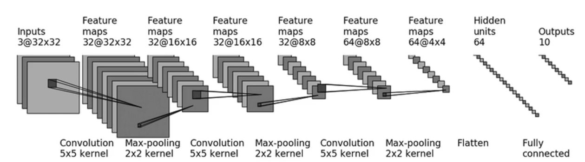
Conv2d的输入和输出大小计算公式为
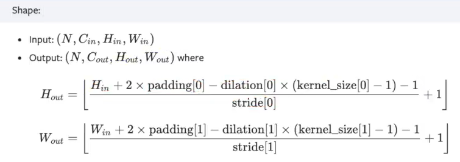
对于模型的第一步，输入满足，，
，未知参数为padding和stride
stride不为1时，padding过大而不合理，所以设置
1 | |
1 | |
使用Sequential简化
1 | |
1 | |
输入tensorboard --logdir=logs/mm_seq ，可以可视化查看网络
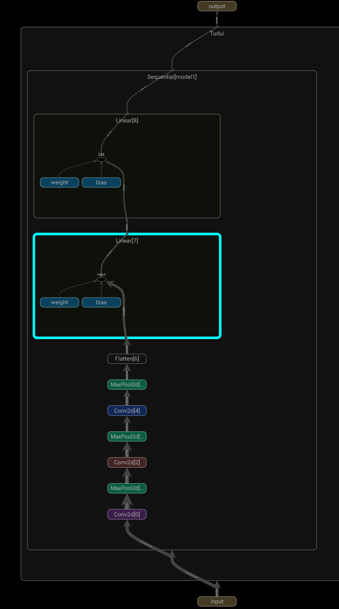
损失函数和反向传播
损失函数举例
1 | |
1 | |
inputs对于运行的结果，targets对应期望的结果，损失的作用是对网络进行打分，结果loss越小，网络的效果越优秀
该代码中用到了三种损失函数
对于L1Loss(reduction='sum')，计算过程为abs(1-1)+abs(2-2)+abs(3-5)=2
对于L1Loss(reduction='mean')，计算过程为(abs(1-1)+abs(2-2)+abs(3-5)=2)/3=0.6667
对于MSELoss()，计算过程为((1-1)**2+(2-2)**2+(3-5)**2)/3=1.3333
1 | |
1 | |
第四种损失函数相对复杂，可以参考官方文档
给网络加上损失函数和反向传播
1 | |
1 | |
优化器
1 | |
输入tensorboard --logdir=logs/nn_optim查看训练效果
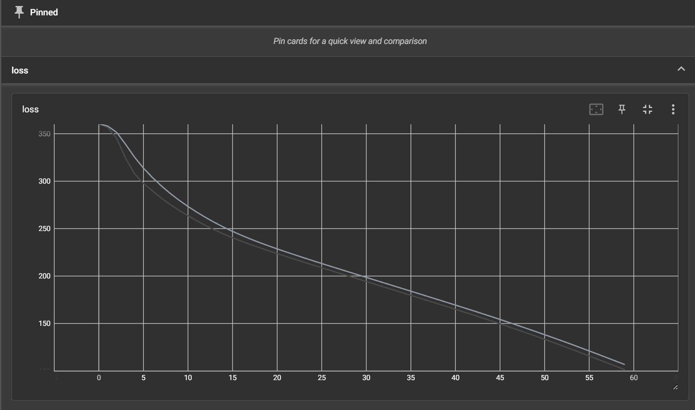
现有网络模型的使用和修改
下面的代码使用训练好的模型vgg16，修改并训练后可用于分类CIFAR10
1 | |
输入tensorboard --logdir=logs/model_pretrained查看训练效果
模型的保存和读取
1 | |
完整的模型训练套路
该示例训练CIFAR10
首先建立模型框架，定义在model.py
1 | |
1 | |
train.py
1 | |
运行train.py，输入tensorboard --logdir=logs/train查看训练效果
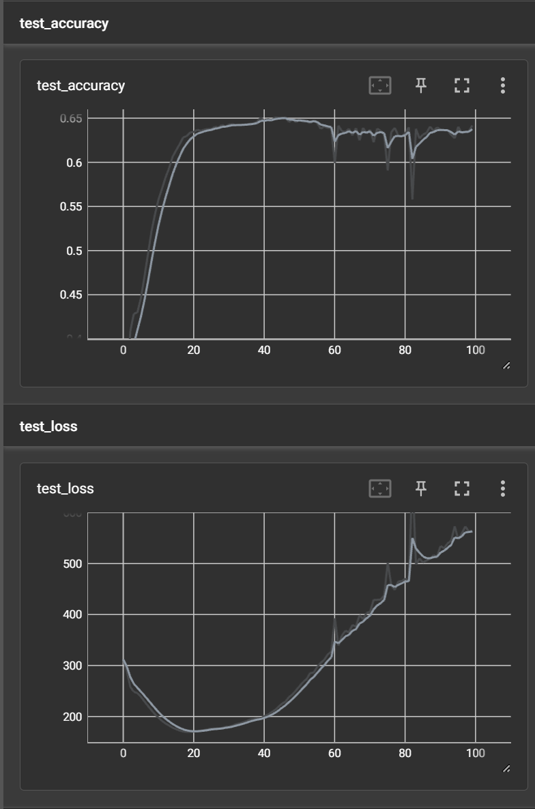
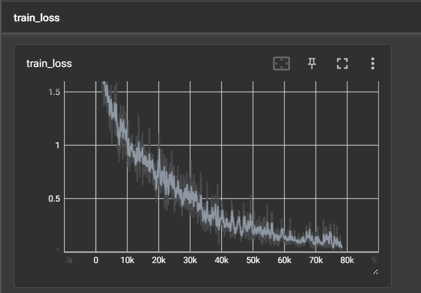
使用GPU训练
修改以下内容
1 | |
使用google的免费GPU计算资源https://colab.research.google.com/
在修改-笔记本设置，可以选择硬件加速器为T4GPU，就能使用GPU运行python代码
验证
1 | |
1 | |
1 | |
1 | |
有16GB的显存，配置很好
在colab上用GPU运行
1 | |
或者换一种写法
1 | |
完整的模型验证思路
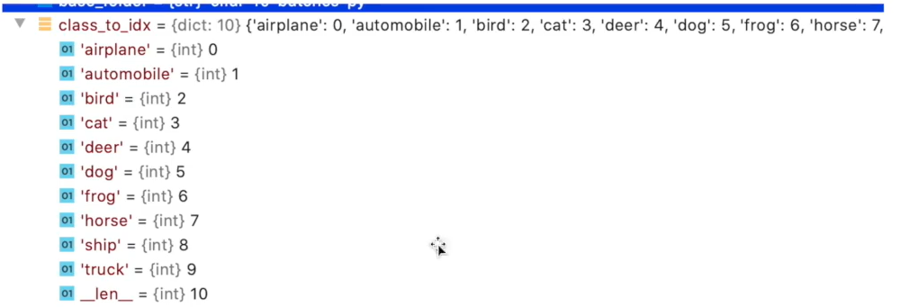
1 | |
1 | |
测试了几张图，除了分不清狗和猫，模型总体表现是不错的
注意：如果模型是在GPU上训练的，但是检验模型的环境不支持GPU，load函数要这么写：model = torch.load("./train_save/tudui_40.pth",map_location=torch.device('cpu'))
案例1-手写数字识别
1 | |
输入tensorboard --logdir=logs/01查看训练效果